NEON MINUIT
Leon Denise & Dorian Rigal
contact@neonminuit.xyz
Colonia
Interactive installation (2019)
Colonia est un dispositif interactif qui demande à l’utilisateur de prendre la position d’une silhouette qu’il voit projetée à l’écran. Une fois la figure reproduite il accède à un espace numérique où son corps est projeté face à une statue. Il peut alors interagir avec cette statue en positionnant son corps à l’intérieur. Chaque mouvement agite le nuage de point et recrée un tableau abstrait mêlant les deux corps, celui de la statue et celui de l’utilisateur. Puis le dispositif revient à l’état initial et propose une autre silhouette.
.jpg)
.jpg)
.jpg)
.jpg)
.jpg)
The Dust of the Sculptures
Hemispherical projection 9:45 min (2018)
This film is about memory. What are the territories of memory. Memory is an unexplored planet, nobody can reach it. Some fragments exist in the digital space, pieces of collective memory that are sometimes perceived by the naked eye. We photographed several statues in the Louvre Museum in Paris. We digitize the real to give it a digital life. We had to decompartment the art, the ownership of the work, the memory of the sacred, the private possession of a cultural heritage to give it as many as possible. Open the artist's work to another perception. In this piece, the sculptures are crossed by the eye, we see them in the distance as small statues, then we cross them as if we were space ants. We explore the world and its objects at different scales to see every detail. There is no barrier, only bridges and doors that allow us to connect to the memory of a sculpture. It is a fantastic digital tour of the Louvre Museum, a museum for all, a universal cultural exchange. A new territory, free of architecture, government, urban policy, private collection.
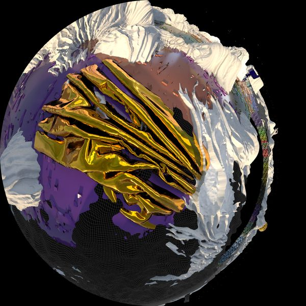 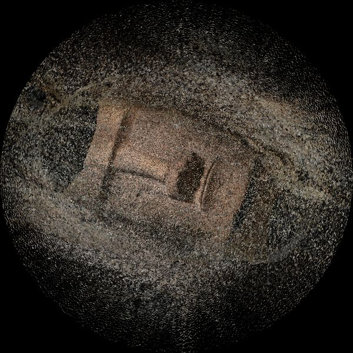
 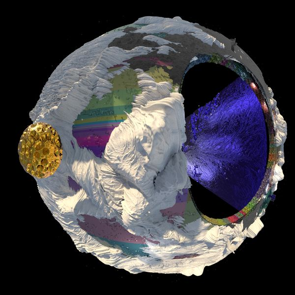
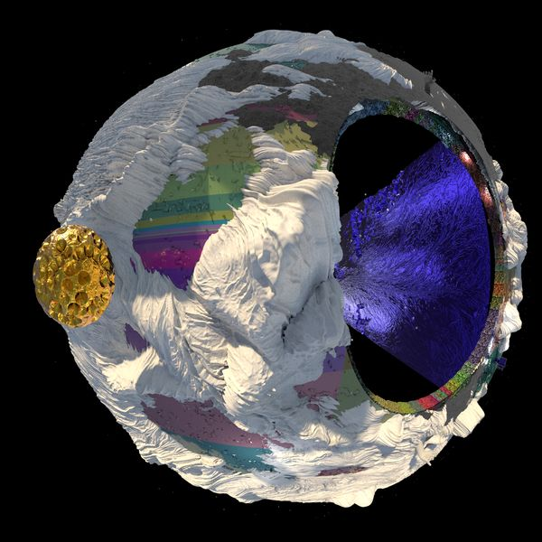
 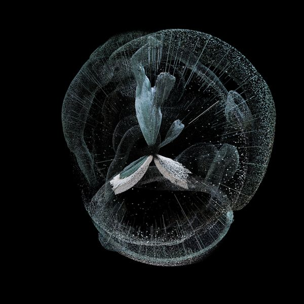
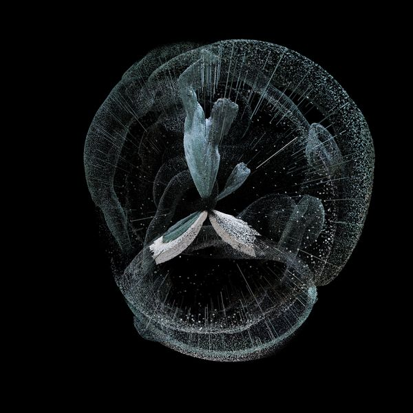
AADN
Hemispherical performance (2018)
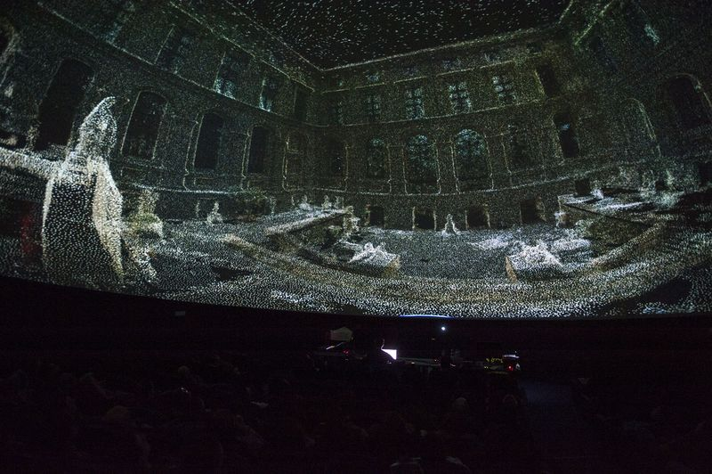 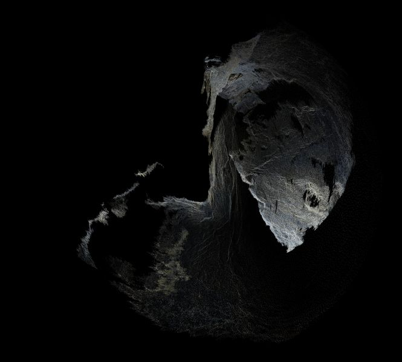 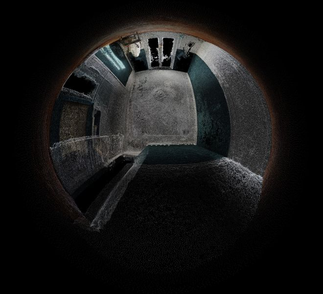 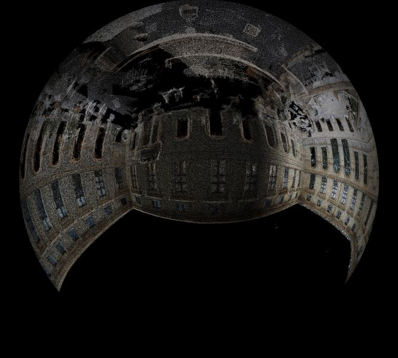 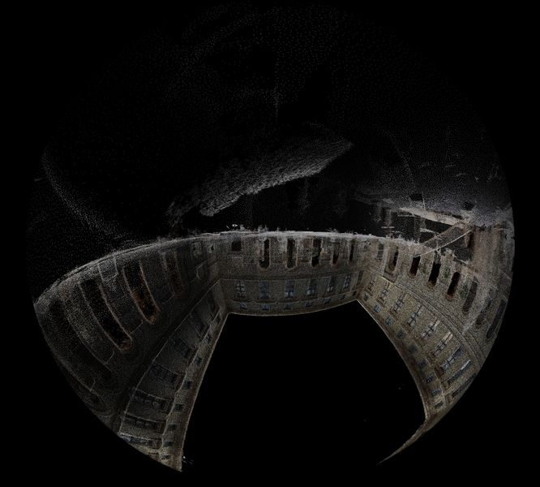
Polarizon
Event (Mapping, Laser, Live Coding) (2018)
Trois jours dédiés aux arts du pixel avec pour terrain de jeu la façade du château de L'amiral à Sceaux, Ile-De-France, France. POLARIZON #01 propose de faire rencontrer au public des artistes performant dans le domaine numérique pour assister à des performances live de mapping (projection de visuel sur façade) ainsi que des ateliers montrant l'envers du décors, les processus de conception et réalisation de cet art.

 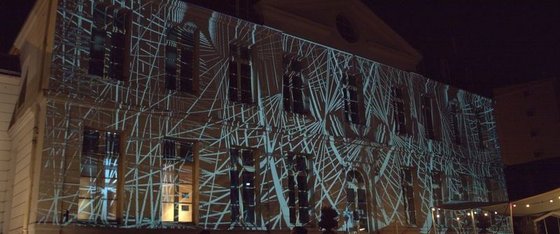
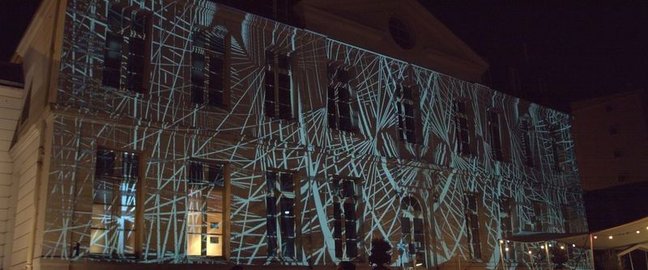
 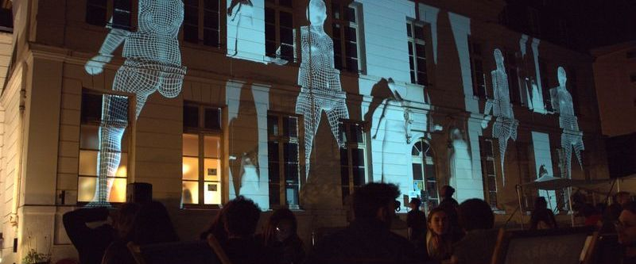
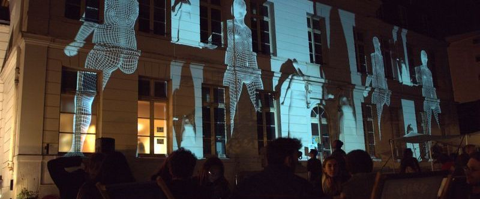

Ether
Interactive visual performance (2018)
La performance est conçue pour deux personnes. La première incarne le corps physique et numérique tandis que la seconde contrôle l’espace numérique vidéoprojeté. C’est également une installation que le public peut parcourir après la performance. La pièce se compose d’équilibres, de poses et mouvements. Musique et projection vidéo créent des interactions dynamiques entre espace réel et espace numérique. Elle raconte l’histoire d’une optique focalisée sur un habitant d’une ville. C’est une caméra de surveillance à vision scopique, une rétine qui voit la nuit. Elle capture l’âme du citadin et la projette dans un univers parallèle, un univers numérique.

 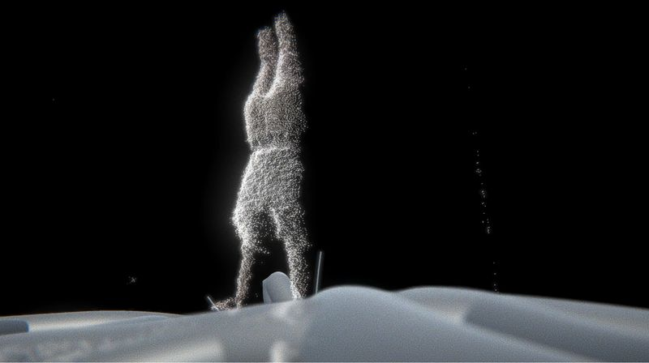
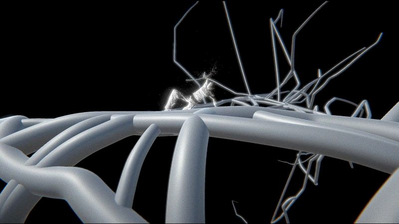
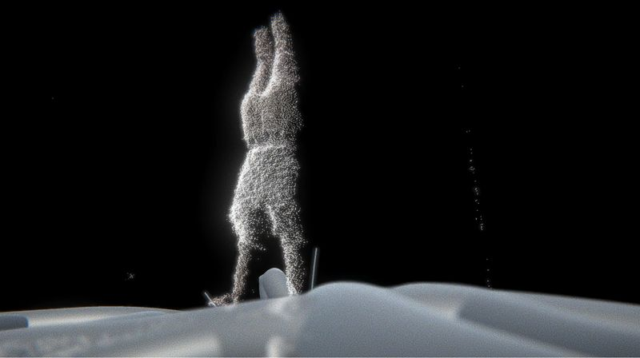
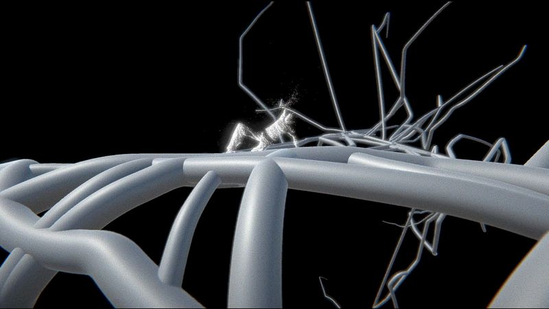
The five sidereal mouvements
Fulldome movie (2017)
The perception is the work of the mind. It receives the waves of the material. The created movie is a journey through a contracted and dilated space. The spectator is plunged instead of an eye who travel the weightlessness. At the end of this introspection the eye returns to the sidereal space where it meets spirits. They show him the body and the movements wich allow the master strengths of the sensitive world. This movie speaks about the research of a feeling state, physically and spiritually, according to various space. So every space has its own density and vibration. The movie explores the tensions of a sidereal journey as Richard Serra make us cross immense pieces of steel witch suvert our sensory space.